فصل چهارم — پالایش تصویر در حوزه فرکانس#
در فصل سوم روشهای پردازش مستقیم روی پیکسل و همسایههای آن را شناختیم. در این فصل به جای دستکاری مستقیم شدت هر پیکسل، تصویر را به مؤلفههای نوسانی تجزیه میکنیم. بعضی مؤلفهها نماینده تغییرات آهسته روشناییاند و برخی تغییرات ریز و لبهها را بیان میکنند. میتوان هر گروه را جداگانه تضعیف یا تقویت کرد، سپس با تبدیل معکوس تصویر را بازسازی کرد. درک نقش فاز، اثر مرزها، چرایی zero padding و انتخاب فیلتر مناسب از حفظ فرمولها مهمتر است.

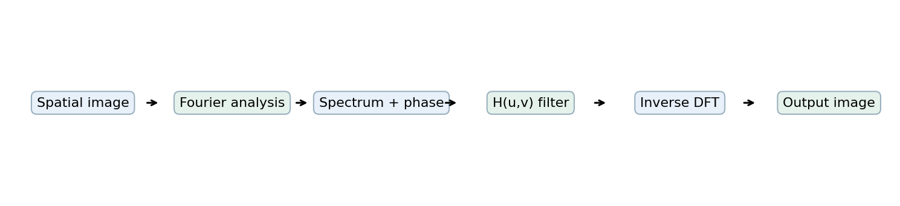
Fig. 39 نقشه مفهومی از تصویر مکانی تا طیف، تابع انتقال و تصویر بازسازیشده.#
اهداف یادگیری#
تفسیر موج سینوسی، عدد مختلط و نقش دامنه و فاز در نمایش فوریه
تشخیص شرط نایکوئیست و پیامد aliasing در نمونهبرداری
محاسبه و تفسیر DFT و IDFT یکبعدی و دوبعدی
توضیح تناوب، جابهجایی، چرخش، تقارن مزدوج، طیف توان و مؤلفه DC
تمایز کانولوشن دوری از خطی و انتخاب درست zero padding
طراحی و مقایسه پایینگذرهای ایدهآل، گوسی و باتروورث
طراحی بالاگذر، unsharp و high-boost و درک رابطه با لاپلاسین
توضیح مدل روشنایی-بازتاب و اجرای پالایش همومورفیک
حذف نویز تناوبی با فیلترهای bandreject و notch متقارن
درک ایده FFT و تفاوت هزینه آن با DFT مستقیم
راهنمای نمادگذاری: \(f(x,y)\) تصویر در حوزه مکان، \(F(u,v)\) تبدیل دوبعدی، \(H(u,v)\) تابع انتقال فیلتر، \(G(u,v)=H(u,v)F(u,v)\) طیف خروجی، \(g(x,y)\) تصویر بازسازیشده و \(j^2=-1\) هستند. نماد \(\star\) در روابط کتاب کانولوشن است، نه ضرب عنصر به عنصر. در کد، معمولاً فرکانسها را برای نمایش با fftshift به مرکز میبریم.
نکته درباره شمارهگذاری: برای امکان تطبیق با فایل LaTeX پیوستشده، شماره فرمولهای همان فایل از (4-1) تا (4-174) حفظ شدهاند. شکلها در این نسخه اصیل/آموزشی هستند و شماره فایل آنها لزوماً با تصویر کتاب یکی نیست.
4.1 پیش زمینه و مزیت محاسباتی#
اگر قرار باشد هر پیکسل را با یک هسته بزرگ پردازش کنیم، روش مستقیم به تعداد زیادی جمع و ضرب نیاز دارد. در مقابل، به کمک قضیه کانولوشن میتوان تصویر را تبدیل فوریه کرد، در تابع انتقال ضرب کرد و به حوزه مکان بازگشت. البته FFT همیشه سریعتر نیست: اندازه تصویر، اندازه هسته، جداییپذیری، هزینه پُرکردن با صفر و پیادهسازی سختافزاری تعیین میکنند کدام روش مناسبتر است. نسبتهای زیر تخمین نظری عملیات هستند، نه زمان قطعی اجرا.
مثال: برای تصویر \(512\times512\) و هسته \(5\times5\)، پالایش مکانی غالباً قابل رقابت است؛ اما با بزرگتر شدن هسته غیرجداییپذیر، محاسبه در حوزه فرکانس جذابتر میشود.

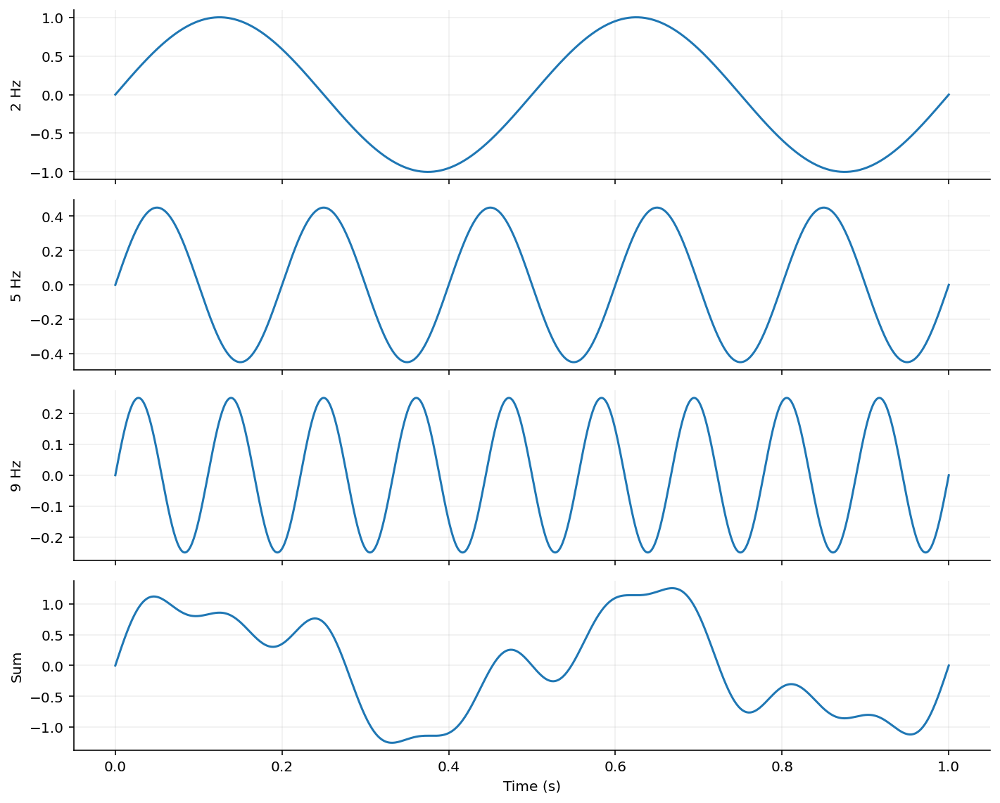
Fig. 40 ترکیب موجهای ساده برای ساخت سیگنال پیچیدهتر؛ ایده تجزیه فوریه.#

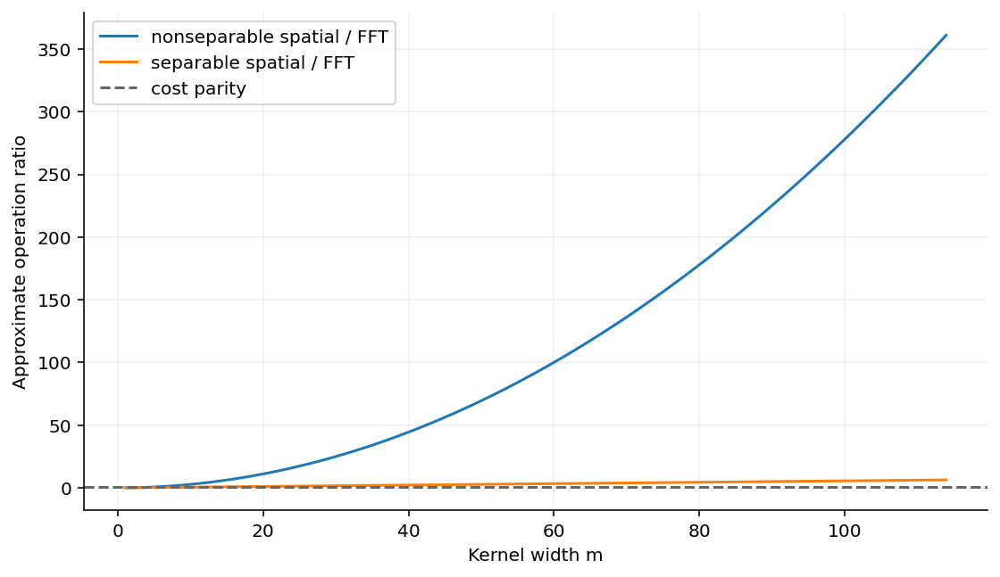
Fig. 41 مقایسه مدل نظری هزینه پالایش مکانی و FFT، وابسته به اندازه هسته.#
اگر تصویر و هسته مربع و به ترتیب دارای اندازه های \(M\times M\) و \(m\times m\) باشند، نسبت هزینه پالایش مکانی به روش فوریه برای هسته جداناپذیر و جداپذیر چنین است:
تفسیر رابطههای (4-1) — اگر \(C_n>1\) باشد، پیاده سازی فوریه عملیات کمتری می خواهد. رشد مربعی \(m^2\) نشان می دهد مزیت FFT برای هسته های بزرگ بسیار سریع زیاد می شود.
تفسیر رابطههای (4-2) — جداپذیری هزینه مکانی را از مرتبه \(m^2\) به \(m\) کاهش می دهد؛ از این رو نقطه برتری FFT دیرتر فرا می رسد.
4.2 مفاهیم مقدماتی#
در حوزه فرکانس هر نقطه «یک پیکسل دیگر» نیست؛ آن نقطه مقدار مشارکت یک الگوی نوسانی مشخص در ساخت تصویر را بیان میکند. برای نمایش همزمان قدرت و جابهجایی مکانی هر نوسان، به عدد مختلط احتیاج داریم: اندازه سهم آن فرکانس و فاز مکان قرارگیری الگو را نشان میدهد. در ادامه، ضربه و قطار ضربه را معرفی میکنیم تا رابطه نمونهبرداری با تکرار طیف روشن شود.

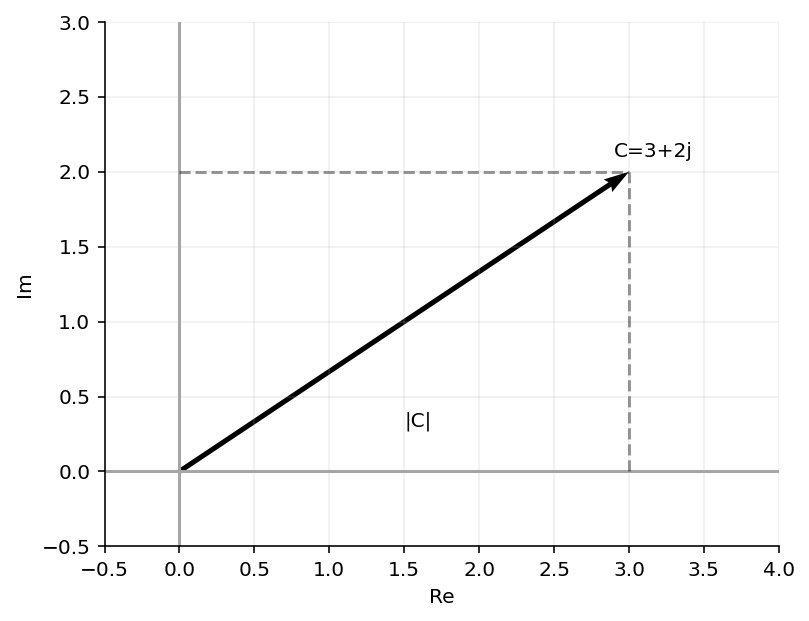
Fig. 42 نشاندادن همزمان جزء حقیقی، موهومی، اندازه و فاز عدد مختلط.#

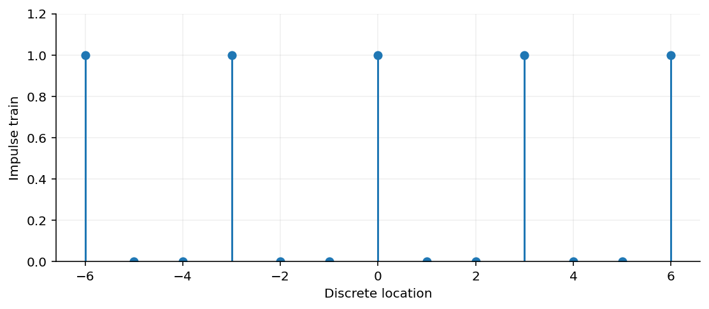
Fig. 43 قطار ضربه گسسته و مفهوم فاصله نمونهها.#

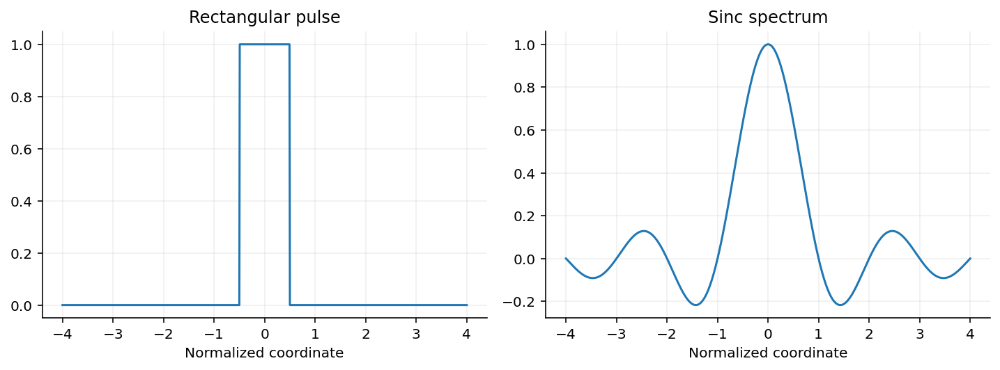
Fig. 44 جفت آموزشی تابع مستطیلی و طیف sinc؛ مرز تند در یک حوزه باعث دنباله نوسانی در حوزه دیگر میشود.#
عدد مختلط و نمایش قطبی#
یک عدد مختلط را میتوان با دو مؤلفه حقیقی و موهومی یا با اندازه و زاویه توصیف کرد. نمایش دوم برای بیان دامنه و فاز فوریه مناسبتر است.
تفسیر رابطههای (4-3) تا (4-5) — \(R\) بخش حقیقی، \(I\) بخش موهومی، \(C^*\) مزدوج و \(|C|=\sqrt{R^2+I^2}\) اندازه است. نمایش قطبی، اندازه و فاز را از هم جدا می کند.
تفسیر رابطههای (4-6) و (4-7) — رابطه اویلر پلی میان توابع مثلثاتی و نمایی مختلط است و دلیل حضور طبیعی سینوس و کسینوس در تبدیل فوریه را روشن می کند.
سری فوریه، ضربه و خاصیت غربالی#
سری فوریه تابع دورهای را از موجهای ساده بازسازی میکند. ضربه دیراک یک ابزار ریاضی ایدهآل است؛ نباید آن را با پالس فیزیکی دارای دامنه واقعاً بینهایت اشتباه گرفت.
تفسیر رابطههای (4-8) و (4-9) — رابطه نخست بازسازی تابع دوره ای از مولفه ها و رابطه دوم وزن هر فرکانس را تعیین می کند.
تفسیر رابطههای (4-10) تا (4-13) — ضربه دیراک با وجود عرض صفر مساحت واحد دارد و در انتگرال، مقدار تابع را در محل ضربه انتخاب می کند.
تفسیر رابطههای (4-14) تا (4-18) — قطار ضربه مدل ریاضی نمونه برداری است. نسخه گسسته همان نقش انتخاب یک نمونه مشخص را دارد.
تبدیل فوریه پیوسته و قضیه کانولوشن#
قضیه کانولوشن پایه طراحی فیلتر در حوزه فرکانس است. با این حال رابطه ضرب/کانولوشن در هر دو طرف، به قرارداد نرمالسازی تبدیل بستگی دارد.
تفسیر رابطههای (4-19) تا (4-22) — تبدیل مستقیم، تابع را به فرکانس ها می برد و تبدیل معکوس بدون اتلاف آن را بازمی گرداند. رابطه (4-22) بخش حقیقی و موهومی را آشکار می کند.
تفسیر رابطههای (4-23) — تابع sinc پاسخ فرکانسی مهم یک تابع جعبه ای و هسته بازسازی ایده آل است.
تفسیر رابطههای (4-24) تا (4-26) — کانولوشن در یک حوزه به ضرب در حوزه دیگر تبدیل می شود؛ این خاصیت اساس همه پالایش های فرکانسی فصل است.
4.3 نمونه برداری و تبدیل تابع نمونه برداری شده#
چرا یک خطخطی ریز ممکن است در دوربین به نوارهایی درشت یا حرکت ظاهری معکوس تبدیل شود؟ چون نمونهبرداری فقط چند نقطه از سیگنال پیوسته را نگاه میکند. از نظر طیفی این کار چند نسخه جابهجا شده طیف ایجاد میکند. اگر این نسخهها روی هم بیفتند، بعداً با بزرگنمایی یا فیلتر ساده قابل تفکیک نیستند. این پدیده aliasing نام دارد.
مثال عددی: موجی با فرکانس \(7\) هرتز اگر با نرخ \(10\) نمونه بر ثانیه ثبت شود، در نمونهها میتواند شبیه موجی با فرکانس \(3\) هرتز دیده شود. نرخ بیشتر از \(14\) نمونه در ثانیه (با فرض باند محدود) برای جلوگیری از این ابهام لازم است.

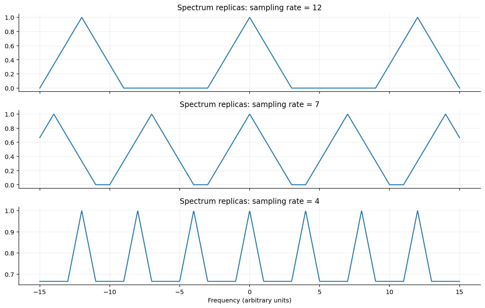
Fig. 45 تکرار دورهای طیف پس از نمونهبرداری و همپوشانی نسخهها در حالت کمنمونهبرداری.#

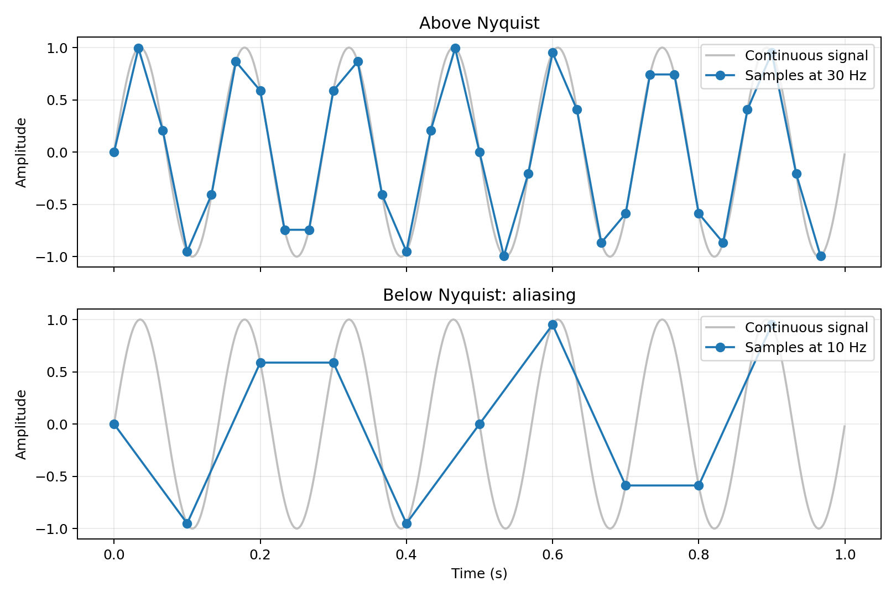
Fig. 46 خروجی آزمایش محاسباتی ساختهشده بهوسیله اسکریپت ارسالی فصل چهارم: sampling_aliasing_result.png#
تفسیر رابطههای (4-27) تا (4-31) — نمونه برداری ضرب تابع در قطار ضربه است. در حوزه فرکانس، این ضرب به تکرار دوره ای طیف با فاصله \(1/\Delta T\) تبدیل می شود.
تفسیر رابطههای (4-32) — نرخ نمونه برداری باید از دو برابر بیشترین فرکانس بیشتر باشد؛ در غیر این صورت نسخه های طیف روی هم می افتند.
تفسیر رابطههای (4-33) تا (4-38) — پایین گذر ایده آل یک نسخه طیف را جدا می کند و در حوزه زمان، بازسازی با جمع sincهای وزن دار انجام می شود.
آزمایش اجرایی: نرخ نایکوئیست#
فایل اجرای این آزمایش: sampling_aliasing_demo.py (در بسته ZIP کدهای همراه موجود است).
در نمودار بالایی، نمونه ها شکل واقعی سینوس را نگه می دارند. در نمودار پایینی، نقاط نمونه یک نوسان کندتر را القا می کنند؛ این فرکانس کاذب پس از نمونه برداری از داده قابل تشخیص از یک فرکانس واقعی نیست.
4.4 تبدیل فوریه گسسته یک بعدی#
از این بخش به بعد با داده محدود رایانهای سروکار داریم، نه تابع پیوسته نامحدود. تبدیل فوریه گسسته یا DFT از \(M\) نمونه، دقیقاً \(M\) ضریب مختلط میسازد. هر ضریب پاسخ به این پرسش است: «الگوی نمایی مختلط این فرکانس چقدر در سیگنال حضور دارد؟» DFT بر اساس ادامه دورهای آرایه تعریف میشود؛ این همان نکتهای است که بعدها در کانولوشن دوری بهکار میآید.

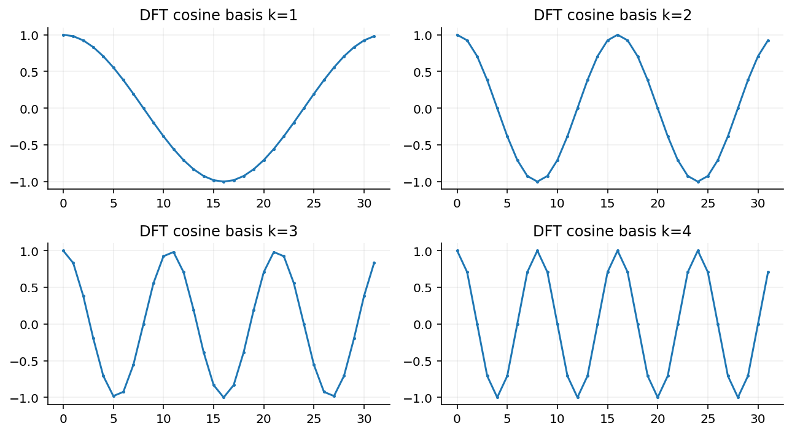
Fig. 47 نمونههای چند پایه کسینوسی گسسته برای فهم ضرایب DFT.#

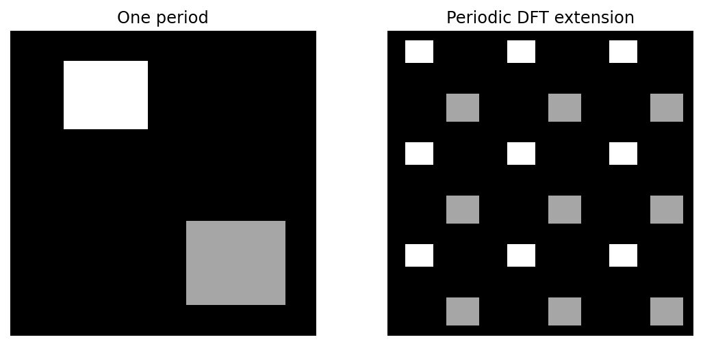
Fig. 48 تفسیر تناوبی DFT و رابطه آن با پیچش از مرز در کانولوشن دوری.#
تفسیر رابطههای (4-39) تا (4-45) — با محدود کردن تابع به \(M\) نمونه و نمونه برداری فرکانس در \(M\) نقطه، جفت DFT/IDFT به دست می آید. ضریب \(1/M\) بازسازی را مقیاس می کند.
تفسیر رابطههای (4-46) تا (4-48) — داده و طیف در مدل DFT دوره ای اند؛ بنابراین کانولوشن مستقیم در این مدل دوری است.
تفسیر رابطههای (4-49) تا (4-51) — افزایش طول ثبت \(T\) تفکیک فرکانسی را بهتر می کند، اما فاصله نمونه ها محدوده فرکانسی قابل مشاهده را تعیین می کند.
4.5 گسترش به توابع دوبعدی#
در تصویر دو مسیر مستقل تغییر وجود دارد: ردیفها و ستونها. بنابراین هر نوسان با دو فرکانس \((u,v)\) مشخص میشود. یک نوار عمودی در تصویر عمدتاً در جهت افقی تغییر شدت دارد؛ به همین دلیل جهت نوسان تصویر و آرایش انرژی در طیف باید دقیق تفسیر شود. DFT دوبعدی را میتوان نخست روی سطرها و سپس روی ستونها اجرا کرد؛ همین جداییپذیری مبنای پیادهسازی کارآمد است.

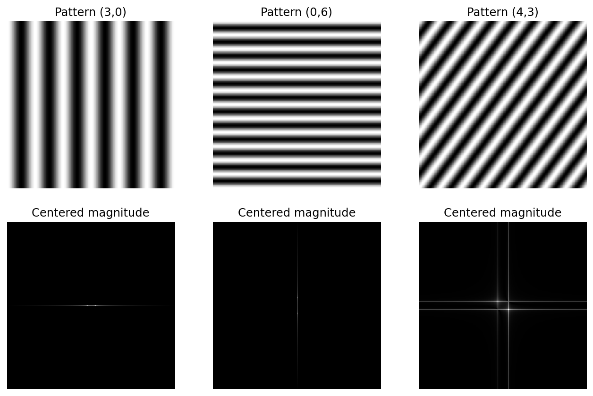
Fig. 49 چگونه جهت و تناوب بافت در تصویر به قلههای متقارن طیف تبدیل میشود.#
تفسیر رابطههای (4-52) تا (4-58) — ضربه دوبعدی یک پیکسل واحد است و خاصیت غربالی آن مقدار تصویر را در یک مختصات انتخاب می کند.
تفسیر رابطههای (4-59) تا (4-66) — تبدیل پیوسته و قضیه نمونه برداری باید در هر دو راستا جداگانه رعایت شوند. کم نمونه برداری در هر محور می تواند aliasing فضایی بسازد.
تفسیر رابطههای (4-67) و (4-68) — این جفت، تعریف عملی DFT دوبعدی تصویر و بازسازی آن است. هر ضریب \(F(u,v)\) سهم یک الگوی موج دوبعدی را بیان می کند.
4.6 ویژگی های تبدیل فوریه گسسته دوبعدی#
این ویژگیها صرفاً قواعد نمادین نیستند؛ برای تفسیر طیف و طراحی فیلتر ضروریاند. جابهجایی هندسیِ تصویر بهتنهایی اندازه طیف را تغییر نمیدهد، ولی فاز را تغییر میدهد. چرخش هندسی تصویر نیز در طیف بازتاب مییابد. برای نمایش مناسب معمولاً فرکانس صفر را به وسط تصویر طیف منتقل میکنیم، ولی هنگام ضرب و تبدیل معکوس باید جایگذاری \(fftshift\) و \(ifftshift\) یکدست بماند.

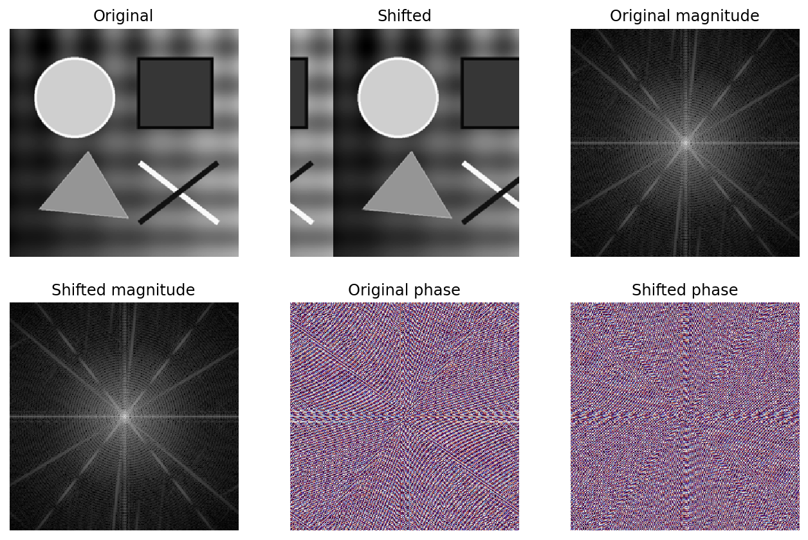
Fig. 50 انتقال مکانی اندازه طیف را تغییر نمیدهد ولی فاز را عوض میکند.#

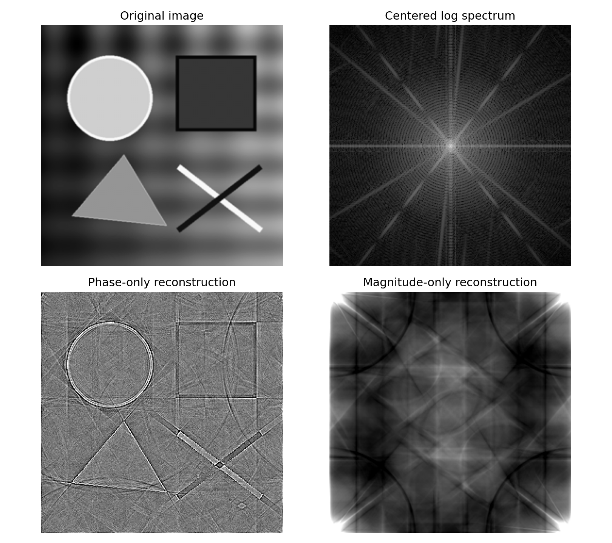
Fig. 51 خروجی آزمایش محاسباتی ساختهشده بهوسیله اسکریپت ارسالی فصل چهارم: spectrum_phase_result.png#

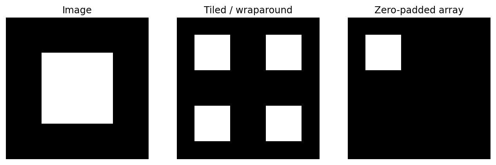
Fig. 52 فرق ادامه تناوبی تصویر و گسترش با صفر برای جلوگیری از همپوشانی ناخواسته.#

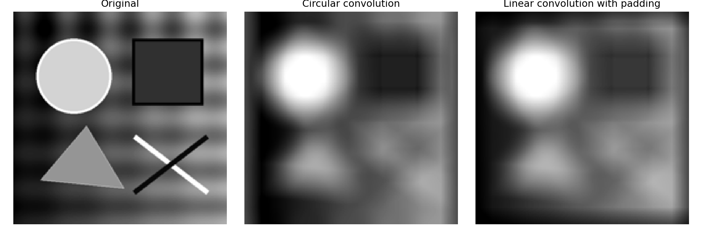
Fig. 53 خروجی آزمایش محاسباتی ساختهشده بهوسیله اسکریپت ارسالی فصل چهارم: convolution_padding_result.png#
فاصله ها، انتقال و تناوب#
در تعریف DFT، انتقال با اندیسهای پیمانهای تفسیر میشود؛ نتیجه برای انتقال ساده در آرایه بدون درنظرگرفتن مرزها ممکن است متفاوت باشد.
تفسیر رابطههای (4-69) و (4-70) — تفکیک فرکانسی هر محور به تعداد نمونه و گام مکانی همان محور بستگی دارد.
تفسیر رابطههای (4-71) تا (4-73) — مدولاسیون، طیف را جابه جا می کند؛ جابه جایی تصویر فقط فاز را تغییر می دهد؛ و چرخش در هر دو حوزه با همان زاویه رخ می دهد.
تفسیر رابطههای (4-74) تا (4-76) — تبدیل گسسته دوره ای است. ضرب در \((-1)^{x+y}\) مولفه صفر را به مرکز آرایه می برد و نمایش طیف را خواناتر می کند.
تقارن، اندازه، فاز و توان#
برای تصویر حقیقی، طیف تقارن مزدوج دارد. این موضوع هم در تشخیص نویز تناوبی و هم در ساخت فیلترهایی که خروجی حقیقی داشته باشند استفاده میشود.
تفسیر رابطههای (4-77) تا (4-85) — هر تابع از بخش زوج و فرد تشکیل می شود. برای تصویر حقیقی، طیف تقارن مزدوج دارد؛ این تقارن در طراحی تابع انتقال حقیقی بسیار مهم است.
تفسیر رابطههای (4-86) تا (4-89) — نمایش قطبی، اندازه طیف و فاز را جدا می کند. توان مربع اندازه است. برای محاسبه فاز باید از تابع چهارناحیه ای atan2 استفاده کرد.
تفسیر رابطههای (4-90) تا (4-93) — اندازه طیف زوج و فاز فرد است. مولفه \(F(0,0)\) مجموع شدت ها و متناسب با میانگین روشنایی تصویر است.
تقارنهای مهم: برای تصویر حقیقی، \(F(u,v)=F^*(-u,-v)\). اگر تصویر حقیقی و زوج باشد، تبدیل آن حقیقی و زوج است. این شرط هنگام طراحی فیلترهای متقارن اهمیت دارد.
آزمایش اجرایی: اندازه و فاز#
فایل اجرای این آزمایش: spectrum_phase_demo.py (در بسته ZIP کدهای همراه موجود است).
بازسازی فازمحور مرز و مکان اشیا را حفظ می کند، در حالی که بازسازی اندازه محور بیشتر توزیع کلی انرژی را نشان می دهد. این نتیجه توضیح می دهد چرا دستکاری ناآگاهانه فاز می تواند هندسه تصویر را به شدت تغییر دهد.
کانولوشن دوری و صفرگذاری#
اگر تصویر با هسته بدون padding در فرکانس ضرب شود، پیکسلهای نزدیک یک لبه میتوانند به لبه مقابل «بپیچند». در خروجی علمی این یک خطای مرزی جدی است.
تفسیر رابطههای (4-94) تا (4-96) — قضیه کانولوشن در دو بعد برقرار است، اما DFT به طور ضمنی توابع دوره ای را کانولوشن می کند.
تفسیر رابطههای (4-97) تا (4-103) — صفرگذاری طول دوره را به اندازه کافی زیاد می کند تا نسخه های کانولوشن روی هم نیفتند. انتخاب \(2M\times2N\) ساده و ایمن است.
فایل اجرای این آزمایش: convolution_padding_demo.py (در بسته ZIP کدهای همراه موجود است).
در خروجی دوری، اطلاعات از یک مرز به مرز مقابل بازمی گردد. صفرگذاری این تداخل را حذف می کند و نتیجه هم ارز کانولوشن خطی می شود.
4.7 مبانی پالایش در حوزه فرکانس#
تابع انتقال \(H(u,v)\) را مانند یک «ولوم مستقل برای هر فرکانس» تصور کنید. مقدار صفر به معنی حذف آن مؤلفه، یک به معنی عبور بدون تغییر و مقادیر بین صفر و یک به معنی تضعیف هستند. مقادیر بزرگتر از یک برای تقویت هم استفاده میشوند. پس از ضرب \(G=HF\)، با IDFT به پیکسلها برمیگردیم. نکته اصلی: DFT ذاتاً دورهای است؛ برای همارزی با کانولوشن خطی معمولاً به zero padding نیاز داریم.

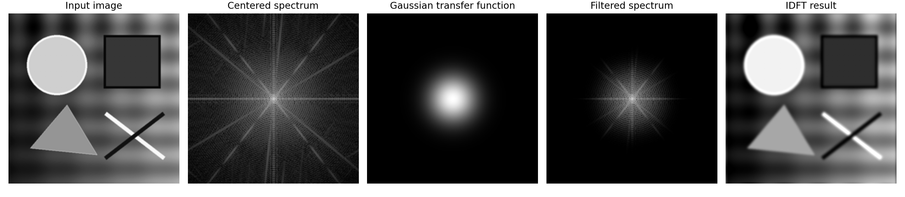
Fig. 54 خروجی آزمایش محاسباتی ساختهشده بهوسیله اسکریپت ارسالی فصل چهارم: frequency_filter_pipeline_result.png#
تفسیر رابطههای (4-104) و (4-105) — طیف تصویر در تابع انتقال ضرب و سپس تبدیل معکوس گرفته می شود. بخش حقیقی برای حذف خطاهای عددی کوچک نگه داشته می شود.
تفسیر رابطههای (4-106) — تابع انتقال و پاسخ ضربه یک زوج فوریه اند؛ بنابراین می توان رفتار یک هسته مکانی را از طیف آن تحلیل کرد.
تفسیر رابطههای (4-107) تا (4-110) — گوسی در هر دو حوزه گوسی می ماند و پهنای دو حوزه رابطه معکوس دارد. تفاضل دو گوسی یک بالاگذر نرم و بدون برش ناگهانی می سازد.
آزمایش اجرایی: زنجیره کامل پالایش#
فایل اجرای این آزمایش: frequency_filter_pipeline.py (در بسته ZIP کدهای همراه موجود است).
4.8 هموارسازی با پایین گذرهای فرکانسی#
بافت نرم و تغییرات آهسته تصویر معمولاً در فرکانسهای نزدیک مرکز طیف قرار دارند؛ مرزهای تند و ریزبافتها سهم بیشتری در فرکانسهای بالا دارند. پایینگذر بخشی از فرکانسهای بالا را کاهش میدهد و تصویر را هموار میکند. پایینگذر ایدهآل مرز تند دارد و میتواند اطراف لبهها نوسان (ringing) ایجاد کند؛ گوسی گذار نرم دارد و باتروورث میان این دو قابل تنظیم است. در همه روشها باید افت جزئیات واقعی را در برابر کاهش نویز سنجید.

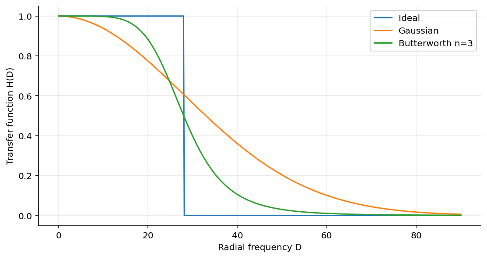
Fig. 55 مقایسه مرز تند پایینگذر ایدهآل با گذار نرم گوسی و باتروورث.#

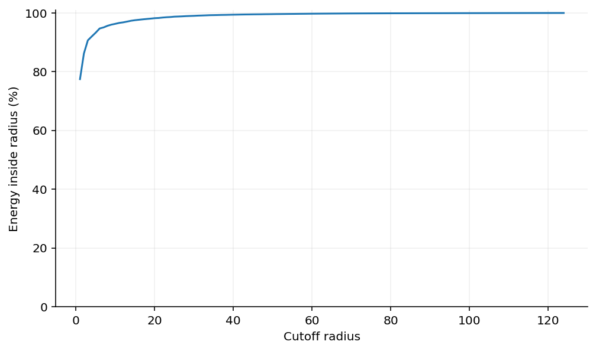
Fig. 56 درصد انرژی طیف که داخل شعاع انتخابی جمع میشود؛ راهنمای انتخاب cutoff.#

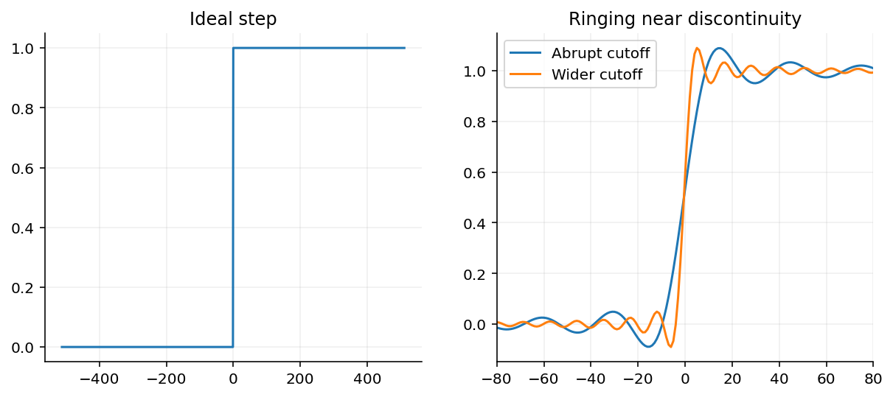
Fig. 57 نوسانهای ringing نزدیک مرز تند در اثر برش ناگهانی طیف.#

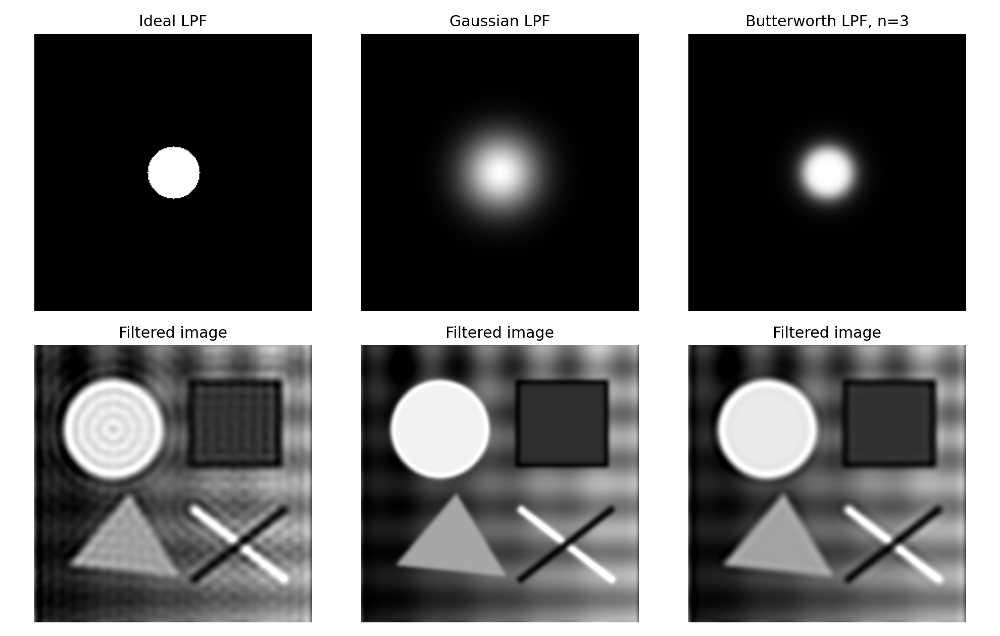
Fig. 58 خروجی آزمایش محاسباتی ساختهشده بهوسیله اسکریپت ارسالی فصل چهارم: lowpass_filter_comparison_result.png#
تفسیر رابطههای (4-111) و (4-112) — پایین گذر ایده آل همه فرکانس های داخل شعاع \(D_0\) را کامل عبور می دهد. مرز ناگهانی آن در حوزه مکانی ringing ایجاد می کند.
تفسیر رابطههای (4-113) و (4-114) — توان محصور در شعاع \(D_0\) معیار کمی برای انتخاب cutoff است؛ توان کم پرفرکانس می تواند جزئیات مهم مرزها را حمل کند.
تفسیر رابطههای (4-115) تا (4-117) — گوسی گذار نرم و بدون ringing دارد. باتروورث با مرتبه \(n\) میان گوسی و ایده آل قابل تنظیم است.
مقایسه انتخاب فیلتر:
فیلتر |
گذار فرکانسی |
مزیت |
محدودیت |
|---|---|---|---|
ایدهآل |
ناگهانی |
تفسیر آسان مرز عبور |
ringing در اطراف لبهها |
گوسی |
پیوسته و نرم |
نتیجه هموار و بدون گذار تند |
ممکن است جزئیات بیشتری را محو کند |
باتروورث |
قابل تغییر با مرتبه |
مصالحه قابل تنظیم |
مرتبه زیاد رفتار نوسانی بیشتر دارد |
فایل اجرای این آزمایش: lowpass_filter_comparison.py (در بسته ZIP کدهای همراه موجود است).
خروجی ایده آل حلقه های روشن اطراف مرز دایره را ایجاد کرده است. گوسی نرم ترین نتیجه را می دهد و باتروورث مرتبه سه مرز را بیشتر نگه می دارد، اما نوسان خفیف تری نسبت به ایده آل دارد.
4.9 تیزسازی با بالاگذرها#
بالاگذر بخش آهسته تصویر را کم میکند و تغییرات سریع را برجسته میسازد. ولی اگر نتیجه خام بالاگذر را تصویر خروجی نهایی فرض کنیم، روشنایی پایه از دست میرود. راه عملیتر آن است که جزئیات استخراجشده را با وزن کنترلشده دوباره به تصویر اصلی بیفزاییم (unsharp/high-boost). در تصاویر پرنویز این کار نویز را هم تقویت میکند؛ بنابراین نباید «تیزتر» را همیشه معادل «بهتر» دانست.

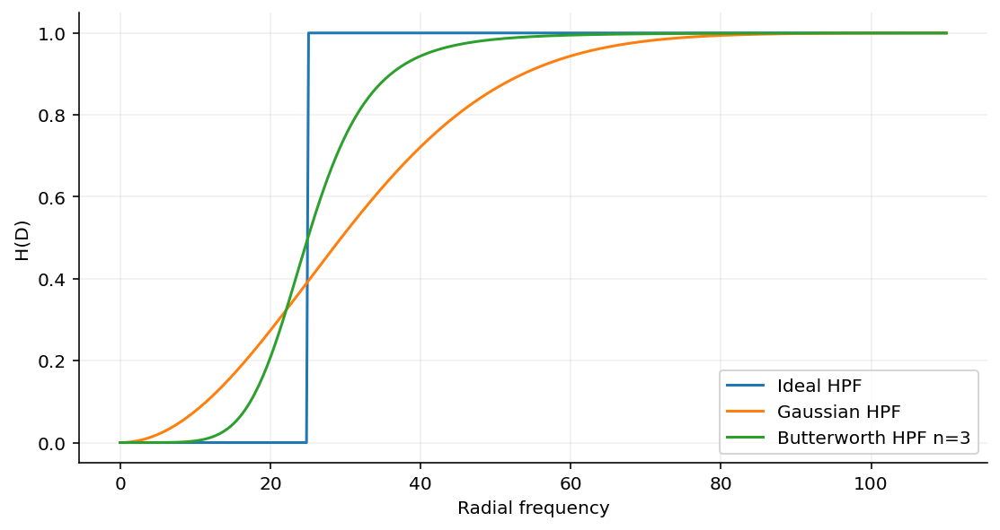
Fig. 59 بالاگذرهای ایدهآل، گوسی و باتروورث بهصورت مکمل پایینگذر.#

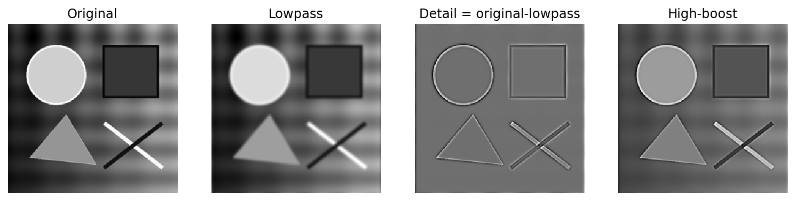
Fig. 60 ساخت ماسک جزئیات و افزودن کنترلشده آن برای تیزسازی.#

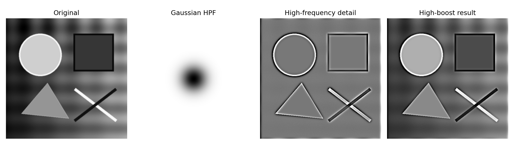
Fig. 61 خروجی آزمایش محاسباتی ساختهشده بهوسیله اسکریپت ارسالی فصل چهارم: highpass_sharpening_result.png#

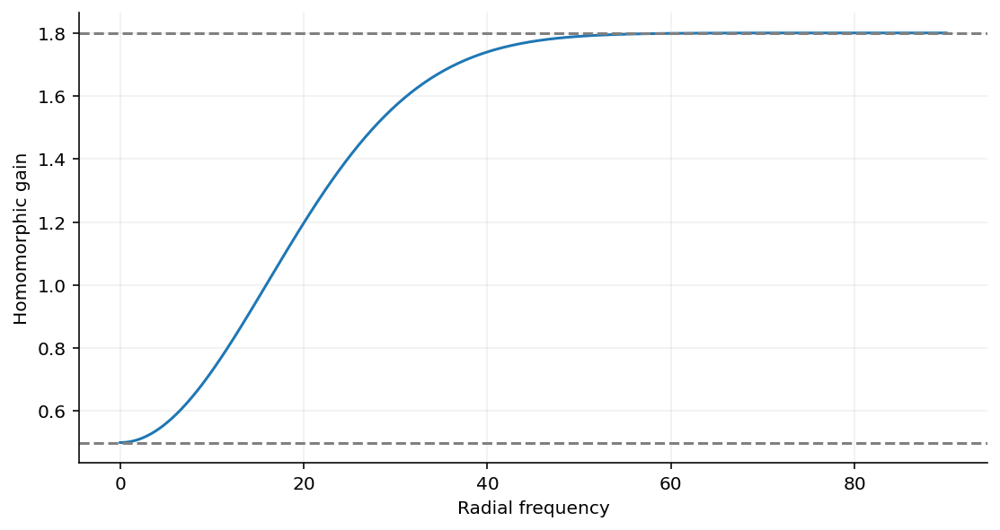
Fig. 62 بهره کمتر برای تغییرات آهسته روشنایی و بهره بیشتر برای جزئیات بازتاب.#

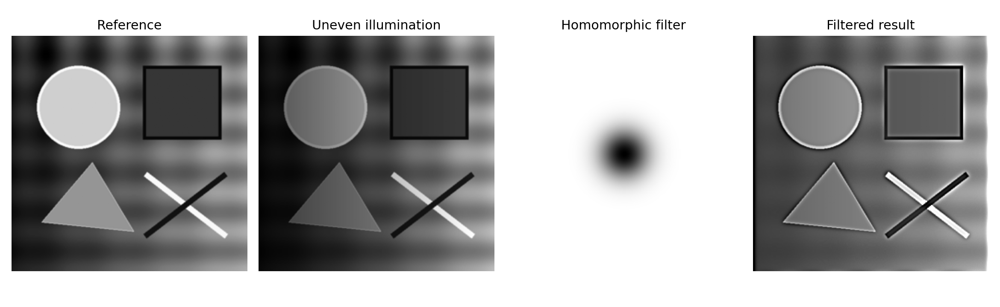
Fig. 63 خروجی آزمایش محاسباتی ساختهشده بهوسیله اسکریپت ارسالی فصل چهارم: homomorphic_filter_result.png#
تفسیر رابطههای (4-118) تا (4-122) — بالاگذر مکمل پایین گذر است و در حوزه مکانی از ضربه منهای هسته هموارساز به دست می آید. مولفه ثابت صفر می شود، پس خروجی خام میانگین نزدیک صفر دارد.
تفسیر رابطههای (4-123) تا (4-127) — لاپلاس وزن فرکانس های بالا را متناسب با مربع فاصله از مرکز زیاد می کند. برای ترکیب با تصویر باید مقیاس لاپلاس کنترل شود.
ماسک ناتیز، high-boost و تاکید فرکانس بالا#
تفسیر رابطههای (4-128) تا (4-132) — جزئیات از تفاضل تصویر و نسخه هموار به دست می آیند. \(k=1\) ماسک ناتیز و \(k>1\) پالایش high-boost است.
تفسیر رابطههای (4-133) — \(k_1\) روشنایی پایه و \(k_2\) سهم فرکانس بالا را مستقل کنترل می کند؛ بنابراین تونالیته تصویر از بین نمی رود.
فایل اجرای این آزمایش: highpass_sharpening_demo.py (در بسته ZIP کدهای همراه موجود است).
پالایش همومورفیک#
مدل \(f=i\,r\) ترکیبی از روشنایی صحنه و بازتاب جسم است. لگاریتم، ضرب را به جمع تبدیل میکند تا تغییرات آهسته روشنایی جداگانه تضعیف شود.
تفسیر رابطههای (4-134) تا (4-138) — مدل روشنایی-بازتاب ضربی است. لگاریتم آن را جمعی می کند تا مولفه آهسته روشنایی و مولفه سریع بازتاب جداگانه قابل وزن دهی شوند.
تفسیر رابطههای (4-139) تا (4-146) — پس از پالایش لگاریتم تصویر، تبدیل معکوس و نمایی گرفتن، مدل ضربی بازسازی می شود.
تفسیر رابطههای (4-147) — \(\gamma_L<1\) تغییرات روشنایی را فشرده و \(\gamma_H>1\) جزئیات بازتاب را تقویت می کند؛ \(c\) تندی گذار را تعیین می کند.
فایل اجرای این آزمایش: homomorphic_filter_demo.py (در بسته ZIP کدهای همراه موجود است).
4.10 پالایش انتخابی#
گاهی نویز در همه فرکانسها پخش نشده است؛ برای مثال خطوط تداخل منظم، تنها چند قله دور از مرکز طیف ایجاد میکنند. بهجای هموار کردن کل تصویر، میتوان ناتچهای کوچک و متقارن روی همان فرکانسها قرار داد. برای تصاویر حقیقی، تقارن مزدوج طیف ایجاب میکند قلههای مزاحم معمولاً جفت حذف شوند. روش مناسب حذف نویز تناوبی، خطوط راهراه و برخی الگوهای moiré است، نه نویز تصادفی عمومی.

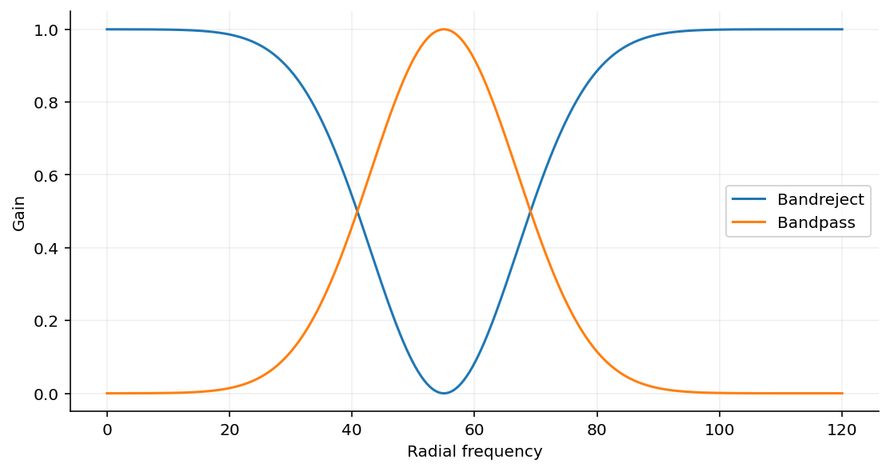
Fig. 64 باندحذف و باندگذر مکمل یکدیگر هستند؛ پهنای باند با W کنترل میشود.#

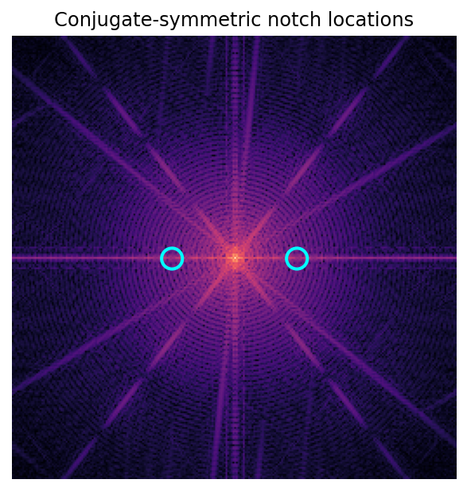
Fig. 65 مکان دو ناتچ متقارن حول مرکز برای حذف فرکانسهای نویز تناوبی.#

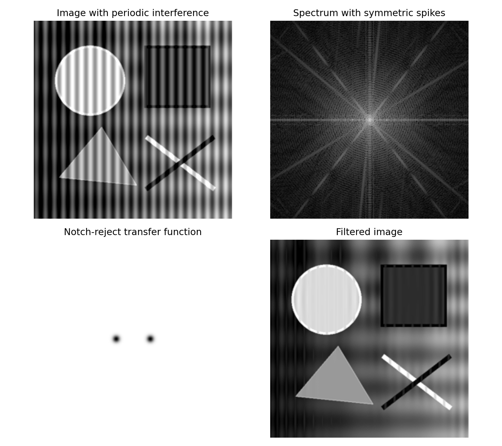
Fig. 66 خروجی آزمایش محاسباتی ساختهشده بهوسیله اسکریپت ارسالی فصل چهارم: notch_filter_result.png#
تفسیر رابطههای (4-148) تا (4-150) — باندگذر مکمل باندحذف است. تابع اصلاح شده در مرکز و بیرون باند مقدار درست دارد و پهنای \(W\) قابل کنترل است.
تفسیر رابطههای (4-151) تا (4-155) — ناتچ ها باید به صورت جفت متقارن نسبت به مرکز طیف ساخته شوند تا خروجی مکانی حقیقی بماند. هر جفت یک مولفه تناوبی خاص را حذف می کند.
فایل اجرای این آزمایش: notch_filter_demo.py (در بسته ZIP کدهای همراه موجود است).
دو قله متقارن خارج از مرکز نشانه نویز سینوسی اند. تابع ناتچ فقط همسایگی همان دو قله را تضعیف می کند، پس بیشتر اطلاعات تصویر دست نخورده می ماند.
4.11 تبدیل فوریه سریع#
FFT تبدیل جدیدی نیست؛ همان DFT را با محاسبات کمتر بهدست میآورد. یک روش رایج، نمونههای زوج و فرد را جدا میکند و از دو تبدیل کوچکتر برای ساخت تبدیل بزرگتر بهره میگیرد. در الگوریتم radix-2، برای طول \(M=2^p\) هزینه نظری از مرتبه \(M^2\) به \(M\log_2M\) کاهش مییابد. در NumPy تابع fft2 برای محاسبات دوبعدی در دسترس است و نیازی نیست الگوریتم پروانهای را در پروژههای معمول از صفر بنویسیم.

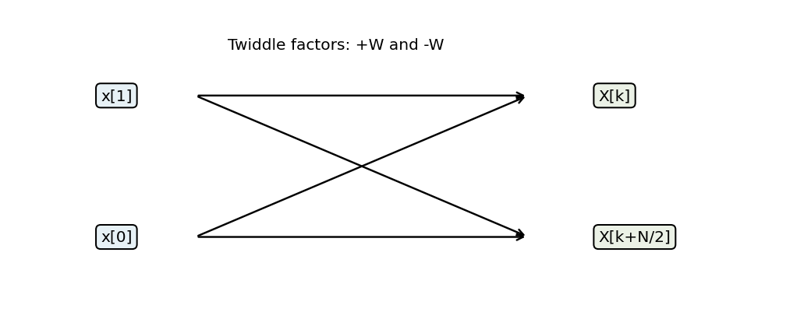
Fig. 67 ساختار نمادین پروانه FFT؛ دو نیمتبدیل با جمع و تفریق ترکیب میشوند.#

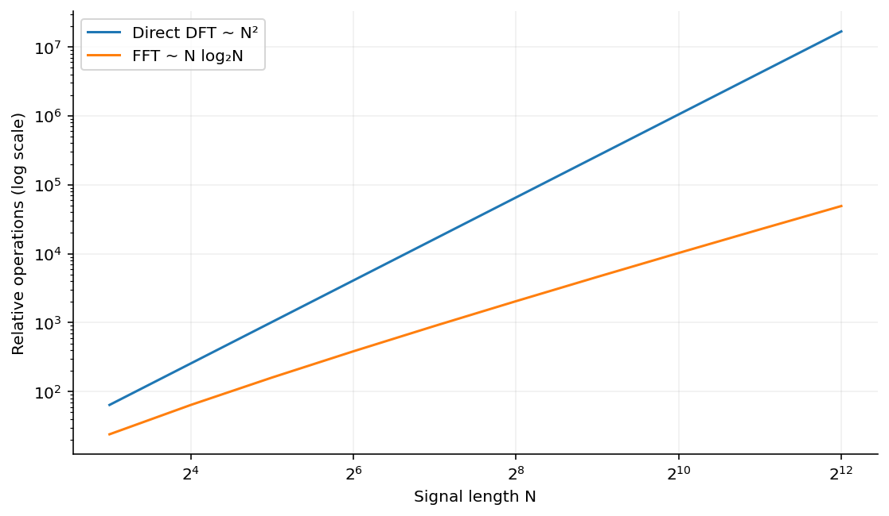
Fig. 68 مقایسه رشد نظری عملیات DFT مستقیم و FFT، مستقل از سختافزار.#

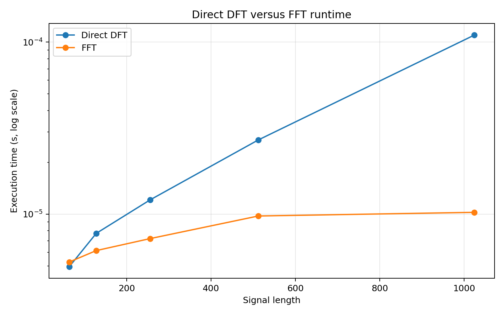
Fig. 69 خروجی آزمایش محاسباتی ساختهشده بهوسیله اسکریپت ارسالی فصل چهارم: fft_runtime_result.png#
تفسیر رابطههای (4-156) تا (4-158) — تبدیل دوبعدی جداپذیر است: ابتدا DFT سطرها و سپس ستون ها محاسبه می شود. تبدیل معکوس نیز با مزدوج گرفتن و یک تبدیل مستقیم قابل ساخت است.
تفسیر رابطههای (4-159) تا (4-168) — الگوریتم FFT نمونه های زوج و فرد را جدا می کند. دو تبدیل نصف اندازه با یک پروانه ترکیب می شوند و نیمه دوم خروجی تقریبا رایگان به دست می آید.
تفسیر رابطههای (4-169) تا (4-174) — حل روابط بازگشتی هزینه را از مرتبه \(M^2\) به \(M\log_2M\) کاهش می دهد. مزیت با بزرگ شدن \(M\) به سرعت افزایش می یابد.
فایل اجرای این آزمایش: fft_runtime_demo.py (در بسته ZIP کدهای همراه موجود است).
4.12 جمع بندی عملی فصل#
برای فهم کامل فصل کافی نیست فقط فرمولهای فوریه را حفظ کنیم؛ باید بتوانیم یک زنجیره عملی قابل اجرا طراحی کنیم: تحلیل تصویر، مشاهده طیف، انتخاب تابع انتقال، کنترل مرزها با padding، اعمال فیلتر، تبدیل معکوس و ارزیابی نتیجه. این الگوریتم عمومی پایهای برای بسیاری از کاربردهای حذف تداخل، صافکردن و افزایش جزئیات تصویر است.

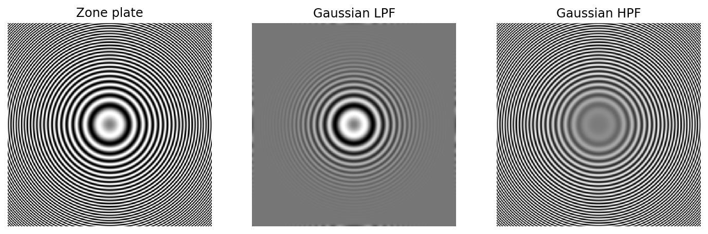
Fig. 70 الگوی مصنوعی zone plate برای آشکار کردن تفاوت پایینگذر و بالاگذر.#
برای اجرای مطمئن پالایش فرکانسی، این ترتیب را حفظ کنید:
تصویر و هسته را به اندازه کافی padding کنید تا کانولوشن دوری به نتیجه خطی آسیب نزند.
طیف را با FFT محاسبه و برای نمایش با fftshift مرکز کنید.
تابع انتقال حقیقی و متقارن را با همان اندازه طیف بسازید.
ضرب عنصر به عنصر \(G=HF\) را انجام دهید.
با IDFT بازگردید، بخش حقیقی را بگیرید و ناحیه اصلی تصویر را استخراج کنید.
دامنه نتیجه را برای نمایش مقیاس بندی کنید، اما در محاسبات علمی علامت و دامنه واقعی را زودهنگام حذف نکنید.
سه خطای رایج عبارت اند از: حذف padding و ایجاد wraparound، جابه جا کردن ناهماهنگ طیف و تابع انتقال، و تفسیر مستقیم تصویر لگاریتم طیف به عنوان دامنه خطی. کدهای این فصل برای هر سه مورد نمونه قابل اجرا فراهم می کنند.
4.13 نکات احتیاطی، انتخاب روش و خطاهای متداول#
۱. فرکانسِ مرکز طیف را با فرکانسهای گوشه اشتباه نگیرید#
در خروجی خام fft2، مؤلفه DC در اندیس \((0,0)\) قرار دارد. fftshift برای نمایش آن را به مرکز میبرد؛ بنابراین ساخت تابع انتقال شعاعی حول مرکز فقط وقتی درست است که همان جابهجایی را برای طیف نیز انجام دهید. برای برگشت، ifftshift به همان قرارداد مربوط است.
۲. «صفرگذاری» به معنی افزودن اطلاعات واقعی نیست#
افزودن صفر برای جلوگیری از کانولوشن دوری یا نمونهبرداری متراکمتر از نمودار طیف به کار میرود، اما بهتنهایی تفکیک فیزیکی جدیدی ایجاد نمیکند. برای کانولوشن خطی کامل دو آرایه \(A\times B\) و \(C\times D\)، حداقل اندازه FFT برابر \((A+C-1)\times(B+D-1)\) است؛ برای برش same باید شاخصگذاری مرکز هسته نیز درست باشد.
۳. پخش نور و روشنایی در همومورفیک، جدایی دقیق نیست#
فرض آهستهبودن روشنایی و سریعبودن بازتاب، یک مدل تقریبی مهندسی است. بازتاب میتواند روند آهسته داشته باشد و سایهها میتوانند لبه تند تولید کنند. همچنین برای گرفتن لگاریتم باید ورودی نامنفی باشد و از صفر محافظت کنیم (log1p در بعضی پیادهسازیها به همین دلیل استفاده میشود). تفاوت log و log1p را در تفسیر خروجی در نظر بگیرید.
۴. فیلتر ایدهآل همیشه خروجی ایدهآل نمیسازد#
لبه تند در تابع انتقال یعنی پاسخ مکانی دنبالهدار و نوسانی. اگر نزدیک مرزهای پرکنتراست حلقههای مصنوعی ظاهر شد، بهجای افزایش مرتبه باتروورث ممکن است گذار نرمتر یا فیلتر گوسی مفیدتر باشد.
۵. قواعد نرمالسازی را بررسی کنید#
قرار دادن ضریب \(1/MN\) در تعریف تبدیل مستقیم یا معکوس قراردادی است، اما باید در کل محاسبه سازگار باشد. در NumPy، fft2 نرمالسازی پیشفرض ندارد و ifft2 ضریب معکوس را اعمال میکند. در مقایسه دامنههای پردازششده، بدون هماهنگی قرارداد نتیجهگیری نکنید.
۶. نکات درباره نمادگذاری منبع#
در معادله (4-62)، بیان دقیق خارجبودن از مستطیل باند محدود آن است که با خروج از بازه مجاز در هر کدام از محورهای فرکانسی، طیف صفر باشد. در روابط (4-123) و (4-124)، تفسیر مشتق پیوسته و مختصات فرکانسیِ نرمالشده را از تفاوت عملگر لاپلاسین گسسته جدا کنید. علامت ضریب در (4-126) باید مطابق قرارداد لاپلاسین انتخاب شود؛ رابطه (4-127) یک انتخاب خاص را نشان میدهد. در (4-151) نماد \(Q\) برای تعداد جفت ناتچ بهکار رفته و نباید با طول یکی از ابعاد FFT اشتباه گرفته شود. این توضیحات برای پیشگیری از سوءبرداشت آمدهاند و شمارهها را نسبت به منبع تغییر نمیدهند.
4.14 سه مثال آموزشی حلشده#
مثال اول: تغییر فاز بدون تغییر اندازه طیف#
یک تصویر را \(10\) پیکسل به راست جابهجا کنید. اگر جابهجایی در چارچوب مدل دورهای DFT انجام شود، اندازه تمام ضرایب \(|F(u,v)|\) یکسان میماند، اما هر ضریب یک فاز وابسته به \(u\) میگیرد. بنابراین اگر فقط قدر مطلق طیف را ببینید ممکن است جابهجایی را متوجه نشوید. در کاربرد ثبت تصویر، همین وابستگی فاز مفید است.
مثال دوم: انتخاب صفرگذاری برای هسته ۷ در ۷#
فرض کنید تصویر \(128\times192\) و هسته \(7\times7\) داریم. نتیجه کامل کانولوشن خطی باید \(134\times198\) باشد؛ چون \(128+7-1=134\) و \(192+7-1=198\). انتخاب FFT با همین اندازه یا اندازه بزرگتر با قرارداد صحیح هسته، از پیچش دوری جلوگیری میکند.
مثال سوم: حذف نویز راهراه بدون تخریب کل جزئیات#
در تصویر با خطوط تناوبی افقی یا عمودی، ابتدا لگاریتم قدر مطلق FFT مرکزی را رسم کنید. نقاط روشنِ منفردِ خارج از مرکز را از مؤلفه DC و ساختار واقعی تصویر تشخیص دهید. سپس برای هر قله مزاحم، ناتچ متقارن کوچک قرار دهید؛ اثر اندازه ناتچ را بر حذف نویز و افت جزئیات واقعی آزمایش کنید.
4.15 تمرینهای دانشجویی#
برای \(M=256\) و هستههای با عرض \(5\)، \(15\) و \(41\) نسبت هزینه تقریبی دو روش فضایی و FFT را از روابط (4-1) و (4-2) حساب کنید. کدام فرضها نتیجه را محدود میکنند؟
نشان دهید چگونه یک سینوس با فرکانس \(13\) هرتز در نرخ نمونهبرداری \(20\) هرتز میتواند با موجی کندتر اشتباه شود.
با یک تصویر مصنوعی، فاز تصویر را صفر بگذارید ولی قدر مطلق طیف را حفظ کنید. سپس حالت معکوس را آزمایش و مقایسه کنید.
تفاوت کانولوشن دوری و خطی را روی تصویری با یک نقطه روشن نزدیک لبه بررسی کنید.
سه پایینگذر با cutoff برابر بسازید؛ ringing، محوشدگی و تضعیف نویز را مقایسه کنید.
روی تصویری با سایه تدریجی، خروجی همومورفیک را برای \(\gamma_L=0.5\) و \(\gamma_H=1.8\) با حالت بدون پردازش مقایسه کنید.
یک نویز تناوبی سینوسی با دو فرکانس در تصویر قرار دهید. چهار قله بیرون مرکز را پیدا و ناتچهای لازم را طراحی کنید.
DFT مستقیم یک بردار \(8\) عضوی را با ضرب ماتریسی حساب کنید و با
np.fft.fftمقایسه کنید.
4.16 راهنمای تطبیق عنوان شکلهای منبع با درس#
فایل LaTeX ارسالی برای فصل چهارم به شکلهای شمارهدار کتاب اشاره میکند. برای حفظ ردّ آموزشی آنها، توصیف علمی این ۶۷ ارجاع در ادامه آمده است. تصویرهای داخل بسته جدید، نمودارهای اصیل ساختهشده برای همین جزوهاند و تصویر کپیشده کتاب نیستند. شماره ارجاع منبع با شماره تصاویر بازطراحیشده در images/ متفاوت است.
شکل در منبع |
موضوع و نکته آموزشی |
|---|---|
4-1 |
نمایش یک تابع پیچیده به صورت جمع سینوس ها و کسینوس ها. شکل، ایده بنیادی فوریه یعنی تجزیه ساختار پیچیده به مولفه های ساده را نشان می دهد. |
4-2 |
مزیت محاسباتی FFT نسبت به هسته های جداناپذیر و جداپذیر. برای هسته های بزرگ، فاصله دو روش چشمگیر می شود. |
4-3 |
ضربه پیوسته، قطار ضربه و همتایان گسسته آنها. فاصله ضربه ها همان گام نمونه برداری است. |
4-4 |
تابع جعبه ای، تبدیل فوریه و طیف sinc. باریک شدن جعبه به پهن شدن طیف می انجامد و برعکس. |
4-5 |
نمونه برداری یک تابع با قطار ضربه و نمایش نمونه های حاصل. |
4-6 |
تکرار طیف در بیش نمونه برداری، نمونه برداری بحرانی و کم نمونه برداری. هم پوشانی طیف همان aliasing است. |
4-7 |
طیف تابع باند محدود و نسخه های دوره ای آن در فرکانس. |
4-8 |
بازیابی یک نسخه طیف با پایین گذر ایده آل. |
4-9 |
نمونه ای از هم پوشانی طیف ها هنگامی که شرط نایکوئیست رعایت نمی شود. |
4-10 |
طیف کم نمونه برداری شده و مولفه کاذب حاصل از تداخل نسخه های طیف. |
4-11 |
یک سینوس سریع که نمونه های کم آن شبیه سینوسی بسیار کندتر دیده می شوند. |
4-12 |
رابطه میان طول ثبت، گام نمونه برداری و نقاط گسسته فرکانس. |
4-13 |
ضربه گسسته دوبعدی. |
4-14 |
تابع جعبه ای دوبعدی و طیف دوبعدی آن. |
4-15 |
قطار ضربه دوبعدی برای مدل کردن شبکه نمونه برداری تصویر. |
4-16 |
طیف دوبعدی درست نمونه برداری شده و حالت هم پوشانی ناشی از کم نمونه برداری. |
4-17 |
برهم کنش شبکه نمونه برداری با مولفه های کم، میانی و پرفرکانس. |
4-18 |
aliasing در الگوی شطرنجی؛ مربع های زیر حد تفکیک به الگوی کاذب تبدیل می شوند. |
4-19 |
aliasing در بازنمونه برداری تصویر طبیعی و تغییر الگوی موآره. |
4-20 |
نمونه های تصویری از الگوهای موآره و تاثیر جهت و بسامد شبکه. |
4-21 |
نمونه aliasing روی یک تصویر دارای بافت تکراری. |
4-22 |
مرکز کردن تبدیل یک بعدی و دوبعدی با جابه جایی نیم دوره. |
4-23 |
اثر جهت یک خط عمودی بر اندازه طیف. |
4-24 |
چرخش خط در تصویر، طیف را با همان زاویه می چرخاند. |
4-25 |
تصاویر متفاوت با اندازه طیف نزدیک، اما فازهای متفاوت. |
4-26 |
بازسازی فقط با فاز و فقط با اندازه؛ ساختار مکانی عمدتا در فاز نهفته است. |
4-27 |
مقایسه کانولوشن خطی و دوری و نمایش خطای پیچش از مرز. |
4-28 |
تصویر میکروسکوپی و طیف آن؛ خطوط روشن طیف جهت غالب ساختار را نشان می دهند. |
4-29 |
اثر یک پایین گذر بر تصویر و کاهش جزئیات سریع. |
4-30 |
توابع انتقال پایین گذر، بالاگذر و بالاگذر دارای آفست و نتیجه هر یک. |
4-31 |
خطای دوری در پالایش بدون padding و نتیجه درست پس از padding. |
4-32 |
دوره ای بودن آرایه بدون padding و پس از افزودن ناحیه صفر. |
4-33 |
رابطه تابع انتقال ایده آل، هسته مکانی و ringing ناشی از ناپیوستگی. |
4-34 |
تغییر علامت فاز و اثر آن بر هندسه تصویر بازسازی شده. |
4-35 |
مراحل کامل padding، مرکز کردن، ضرب طیف، تبدیل معکوس و برش نتیجه. |
4-36 |
رابطه متقابل گوسی در دو حوزه و ساختار تفاضل گوسی برای تیزسازی. |
4-37 |
تصویر نمونه و طیف آن برای استخراج تابع انتقال یک هسته مکانی. |
4-38 |
هسته سوبل، تابع انتقال متناظر و نتایج پالایش در دو حوزه. |
4-39 |
نمای سه بعدی، تصویر و برش شعاعی پایین گذر ایده آل. |
4-40 |
الگوی آزمون و طیف آن با دایره های توان محصور. |
4-41 |
نتایج پایین گذر ایده آل برای cutoffهای مختلف؛ محوشدگی و ringing هم زمان دیده می شوند. |
4-42 |
تابع انتقال ایده آل و پاسخ مکانی نوسانی متناظر. |
4-43 |
پایین گذر گوسی و برش های شعاعی برای cutoffهای مختلف. |
4-44 |
نتایج پایین گذر گوسی؛ گذار محوشدگی نرم و بدون حلقه است. |
4-45 |
پایین گذر باتروورث و تاثیر مرتبه بر شیب گذار. |
4-46 |
نتایج باتروورث؛ رفتار میان ایده آل و گوسی قرار می گیرد. |
4-47 |
هسته های مکانی باتروورث و افزایش نوسان با زیاد شدن مرتبه. |
4-48 |
ترمیم پیوستگی حروف کم تفکیک با پایین گذر مناسب. |
4-49 |
هموارسازی چهره و کاهش جزئیات ریز پوست. |
4-50 |
کاربرد پایین گذر برای کاهش خطوط اسکن و هموارسازی ساختار. |
4-51 |
توابع انتقال بالاگذر ایده آل، گوسی و باتروورث و برش شعاعی آنها. |
4-52 |
هسته های مکانی بالاگذر و نوسان متناظر با برش تند فرکانسی. |
4-53 |
نتیجه سه بالاگذر؛ خروجی شامل مقادیر مثبت و منفی پیرامون مرزها است. |
4-54 |
مقیاس بندی خروجی بالاگذر برای نمایش علامت و دامنه پاسخ. |
4-55 |
تقویت شیارهای اثر انگشت با بالاگذر و آستانه گذاری. |
4-56 |
تیزسازی تصویر با لاپلاس کامل فرکانسی. |
4-57 |
تیزسازی پرتو ایکس با تاکید فرکانس بالا و تکمیل آن با همسان سازی هیستوگرام. |
4-58 |
زنجیره محاسبات پالایش همومورفیک از لگاریتم تا نمایی گرفتن. |
4-59 |
برش شعاعی تابع انتقال همومورفیک و دو سطح بهره کم و زیاد. |
4-60 |
فشرده سازی دامنه روشنایی و تقویت جزئیات در تصویر پزشکی. |
4-61 |
برش های شعاعی باندحذف ایده آل و دو ساخت گوسی. |
4-62 |
نماهای سه بعدی باندحذف ایده آل، گوسی و باتروورث. |
4-63 |
نمایش تصویری سه تابع باندگذر متناظر. |
4-64 |
حذف الگوی موآره با ناتچ های متقارن انتخاب شده از روی طیف. |
4-65 |
حذف تداخل تناوبی در تصویر زحل با ناتچ باریک. |
4-66 |
تابع ناتچ گذر و الگوی مکانی متناظر با مولفه حذف شده. |
4-67 |
رشد مزیت محاسباتی FFT نسبت به محاسبه مستقیم DFT. |
4.17 جمعبندی نهایی#
در حوزه مکان، پیکسلها و همسایگیشان را تغییر میدهیم؛ در حوزه فرکانس، مؤلفههای نوسانی تصویر را وزن میدهیم. DFT نگاشتی کامل بین این دو نمایش است و FFT همان نگاشت را با الگوریتم کارآمد اجرا میکند. آنچه نتیجه را علمی و قابل اعتماد میسازد، رعایت قرارداد نرمالسازی، مدیریت فاز، پرهیز از پیچش دوری، انتخاب تابع انتقال مناسب و ارزیابی تصویر بازسازیشده است.
دانلود کدها و شکلهای آموزشی#
منابع#
R. C. Gonzalez and R. E. Woods, Digital Image Processing, 4th Edition, Pearson, Chapter 4: Filtering in the Frequency Domain.
فایل فارسی ارسالی
chapter_04_filtering_frequency_domain_fa.tex، بهعنوان منبع اصلی ترتیب مطالب، فرمولها و توضیحهای این نسخه.کدها و نمونه مصنوعیِ مجموعه
chapter04_codeاز بسته ارسالی استفاده شدهاند؛ نمودارهای جدید درimages/بازطراحی مستقل آموزشیاند.